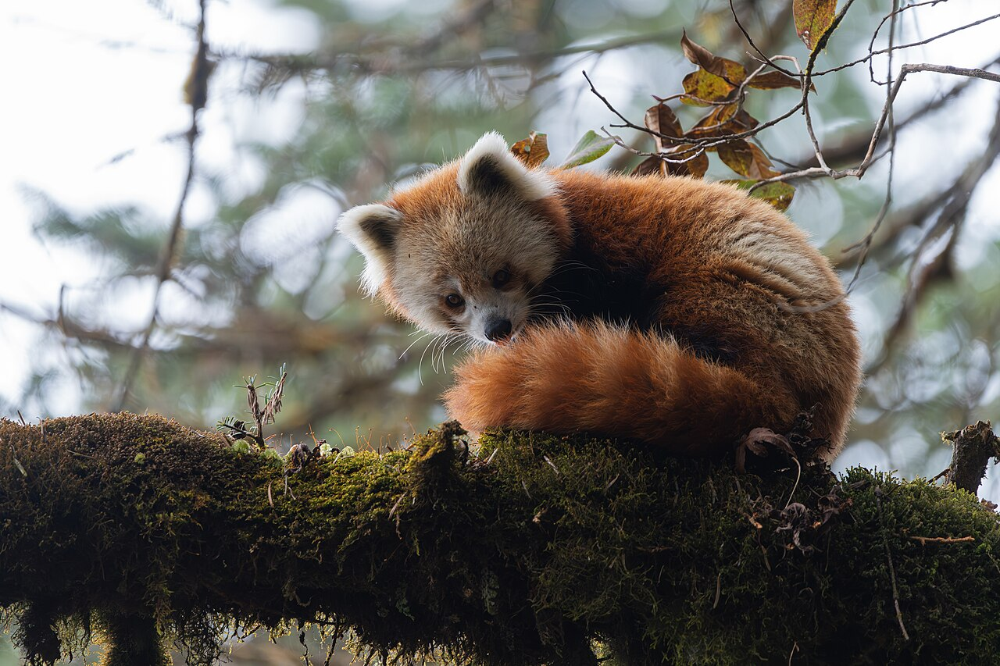
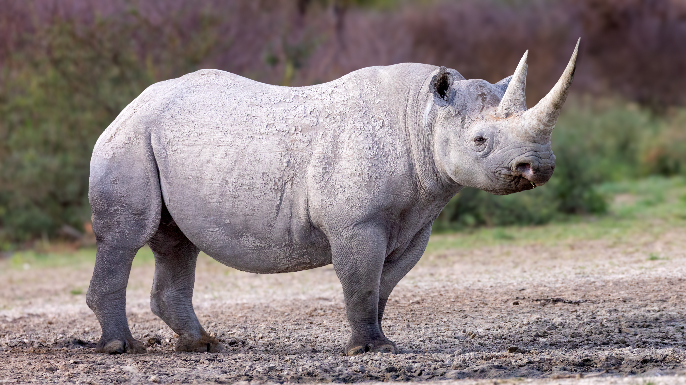
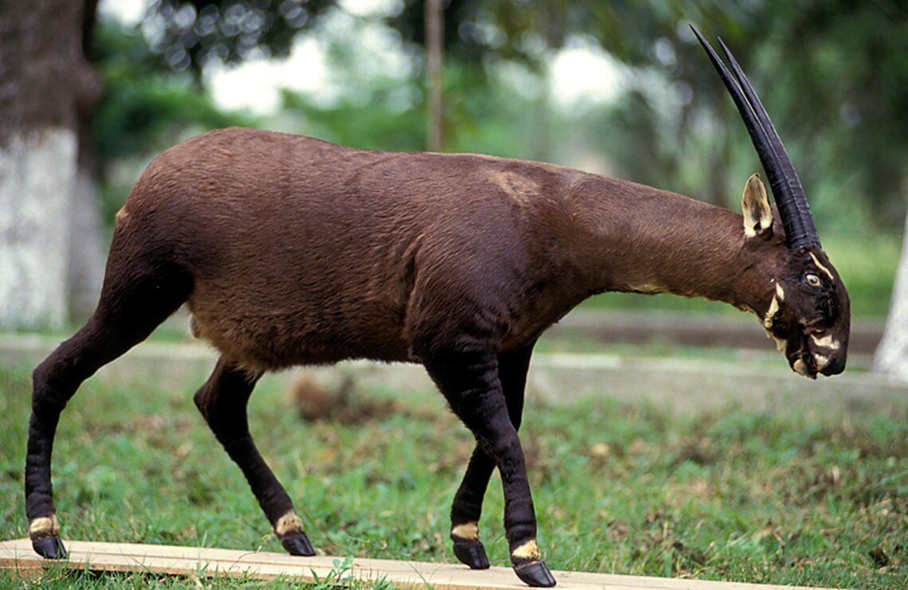

Red pandas are small mammals that live in the forests of the Himalayas. Their populations are threatened by habitat loss and other human activities.
Scientific Name: Ailurus fulgens
Average Weight: 6.5–14 pounds
Length: 20–25 inches
Endangerment Status: Endangered
Estimated Population: Fewer than 10,000 mature individuals

Rhinoceroses are large mammals found in parts of Africa and Asia. Several rhino species are threatened by habitat loss and poaching.
Scientific Name: Diceros bicornis
Average Weight: 1,760–3,090 pounds
Length: 11–13 feet
Endangerment Status: Critically Endangered
Estimated Population: Approximately 6,000 individuals

The saola is a rare mammal found in the forests of Vietnam and Laos. It is threatened by habitat loss and hunting.
Scientific Name: Pseudoryx nghetinhensis
Average Weight: 176–220 pounds
Length: About 5 feet
Endangerment Status: Critically Endangered
Estimated Population: Fewer than 100